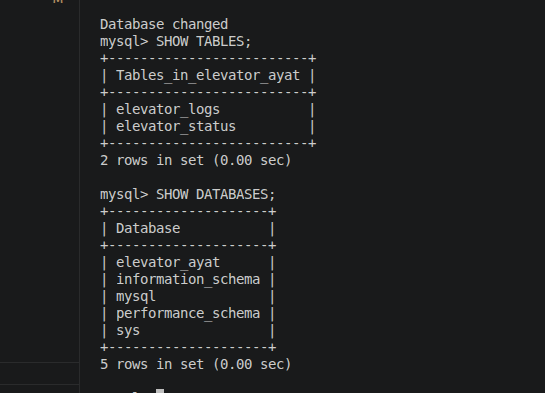
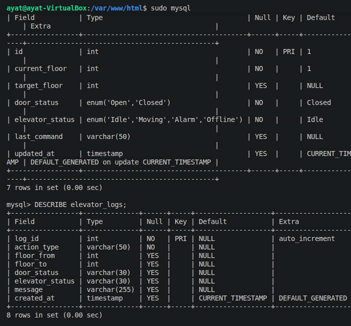
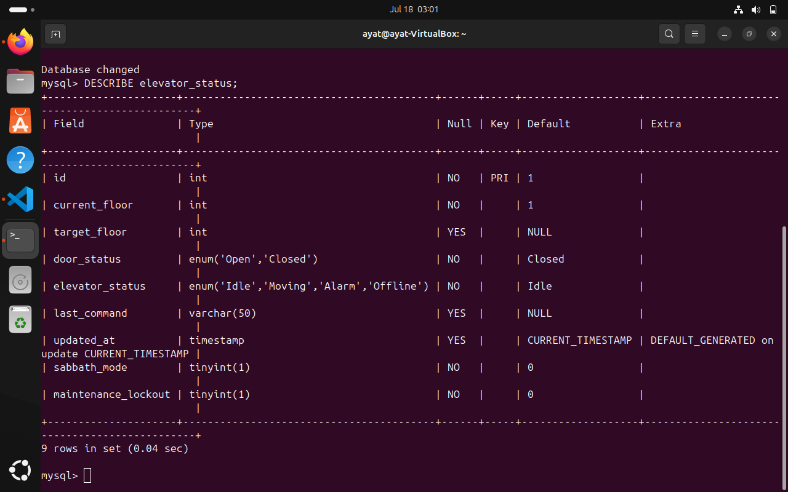

Weekly Log Book - Ayat Hajjar
Ayat Hajjar, 30
My name is Ayat Hajjar. I am a student in the Software Engineering course. My role in this project is creating and maintaining the project website, developing web pages, and working on CAN coding and CAN communication protocol for Phase 1 of the Smart Elevator System project.
Week 1
- Created the home page.
- Tested the website using localhost.
Week 2
- Created the about page.
- Uploaded website files to GitHub.
Week 3
During Week 3, I worked on the First Deliverable for the Smart Elevator System project.
- Prepared the Raspberry Pi server environment.
- Verified network connectivity using RealVNC Viewer.
- Configured CAN communication in STM32CubeIDE.
- Studied the Common CAN Communication Protocol.
- Created and published the Smart Elevator System website using GitHub Pages.
- Developed the initial GUI concept for remote elevator monitoring.
- Prepared system test plans and engineering documentation.
- Participated in project planning meetings with team members.
Week 3 Evidence


.png)
Week 4
During Week 4, I continued working on the Smart Elevator System project. The main focus was CAN communication, Raspberry Pi web interface testing, and verifying that the elevator responds to remote floor requests.
- Configured and tested CAN communication between STM32 controllers.
- Verified CAN transmit and receive messages using Tera Term.
- Tested Floor 1, Floor 2, and Floor 3 request messages.
- Confirmed CAN IDs and data values matched the shared CAN protocol.
- Connected to the Raspberry Pi remotely using RealVNC Viewer.
- Tested the elevator web interface from the Raspberry Pi browser.
- Verified that the elevator moved to the requested floor.
- Updated the project website and log book documentation.
Week 4 Evidence


Result: The CAN communication was working successfully. The STM32 controller received floor request messages, and the Raspberry Pi web interface was able to communicate with the elevator system.
Week 5
During week 5, I worked on the CAN protocol trying to make the controllers all communicate. I also added the project code directly into the website to improve team effectiveness.
Week 5 Evidence
Result: I was successful in making all the controllers communicate as seen on tera term
Week 6
During week 6, I worked on the communication sequence and button programming. This required re-programming the R-PI and a lot of bug fixes.
Week 6 Evidence
Result: I was successful on this despite the many difficultys. The first 2 parts of this sequence where completed last week but the ardiuno and R-pi didn't want to communicate. These will be demonstrated in the Phase 1 project drop box.
Week 7 Logbook
Work Completed
- Designed and developed my personal Elevator Control Dashboard using PHP, HTML, and CSS.
- Created a dedicated MySQL database for the elevator dashboard.
- Created and verified the elevator database tables used to store elevator status and activity logs.
- Implemented the PHP database connection using PDO in
db_connect.php. - Displayed the current floor, target floor, door status, elevator status, and last command on the dashboard.
- Added floor control buttons, door control buttons, and an emergency alarm button.
- Tested the dashboard locally using Apache, PHP, and MySQL.
Week 8 Logbook
Work Completed
- Improved the dashboard user interface by adjusting the layout, spacing, colors, and overall appearance.
- Added a graphical elevator shaft to visually show the current elevator floor.
- Connected the login page to the new elevator dashboard.
- Stored elevator actions inside the activity log.
- Verified communication between the PHP application and the MySQL database.
- Tested floor requests, door controls, and alarm functions.
- Uploaded all completed work to my personal Git branch, Ayat.
- Prepared screenshots and a demonstration video for Phase 2 Debrief 4.
Week 8 and 7 Evidence


Week 9&10 Logbook
Work Completed
During Week 9, I continued developing my Elevator Control Dashboard for Phase 2 of the Smart Elevator System project. The main objective was to improve the software functionality by adding new features that interact directly with the MySQL database and provide a better user experience.
- Implemented recorded MP3 floor announcements for Floor 1, Floor 2, and Floor 3.
- Configured the dashboard to play the correct floor announcement after each floor request.
- Implemented Sabbath Mode to automatically cycle between all three floors.
- Disabled manual floor requests while Sabbath Mode is active.
- Stored automatic Sabbath Mode events inside the elevator activity log.
- Implemented Maintenance Lock-out mode for authorized maintenance operations.
- Disabled floor controls and door controls while Maintenance Lock-out is enabled.
- Kept the Emergency Alarm available during Maintenance Lock-out.
- Updated the Recent Activity log and Diagnostic Report using data stored in the MySQL database.
- Tested all new Phase 2 software features locally using Apache, PHP, and MySQL.
- Setup all for implementation on Rpi when fixed
Testing Performed
- Verified floor announcements for all three floors.
- Verified automatic floor cycling during Sabbath Mode.
- Verified that manual floor requests are ignored while Sabbath Mode is active.
- Verified that Maintenance Lock-out disables all floor and door controls.
- Verified that Emergency Alarm remains operational during Maintenance Lock-out.
- Verified that every operation is recorded correctly in the activity log and displayed in the Diagnostic Report.
Week 9&10 Evidence

Week 11 Logbook
Work Completed
Implemented and tested a FIFO queue for the Smart Elevator System using the Raspberry Pi as the Server Controller. The queue was created using `std::queue
 >
>